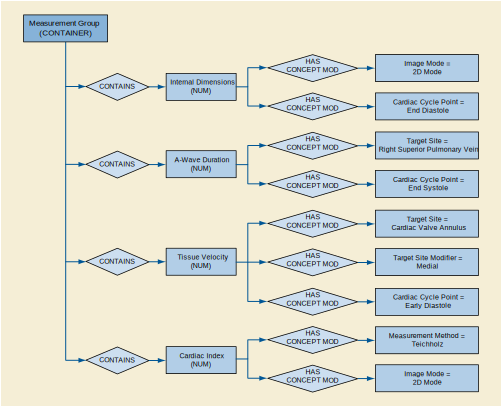

VV.2 Pediatric, Fetal and Congenital Cardiac Ultrasound Patterns
The common Pediatric, Fetal and Congenital Cardiac Ultrasound measurement pattern is a group of measurements obtained in the context of a protocol. Figure VV.2-1 shows the pattern.

Figure VV.2-1. Pediatric, Fetal and Congenital Cardiac Ultrasound Measurement Group Example